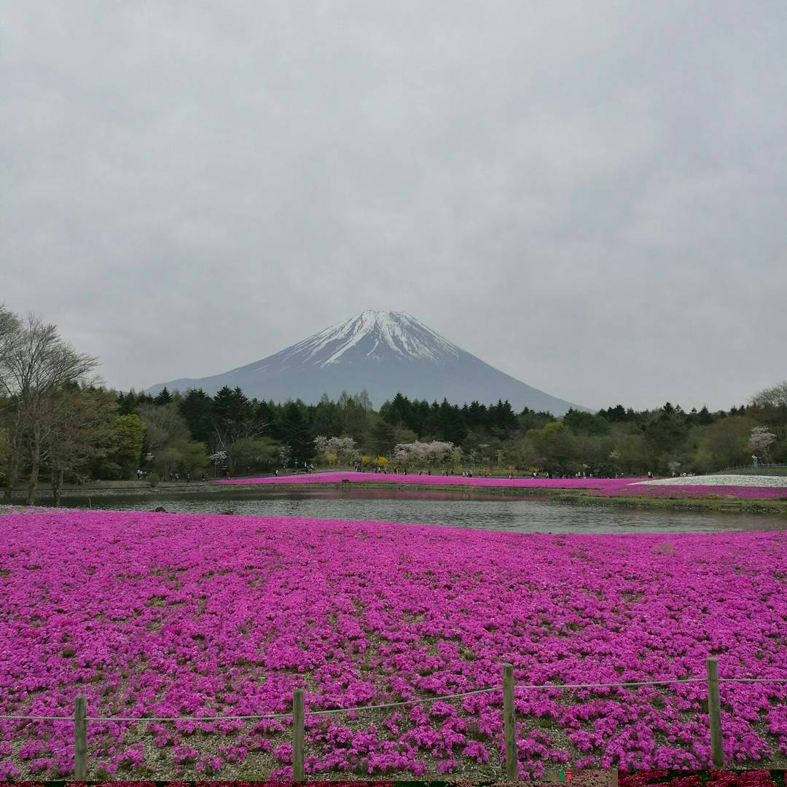
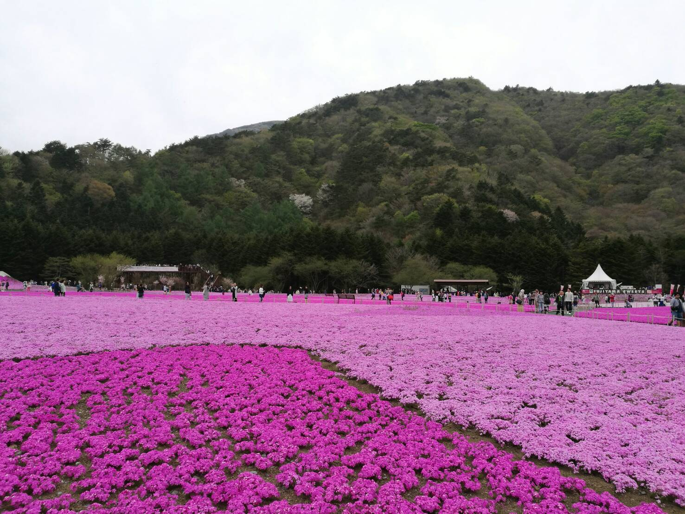
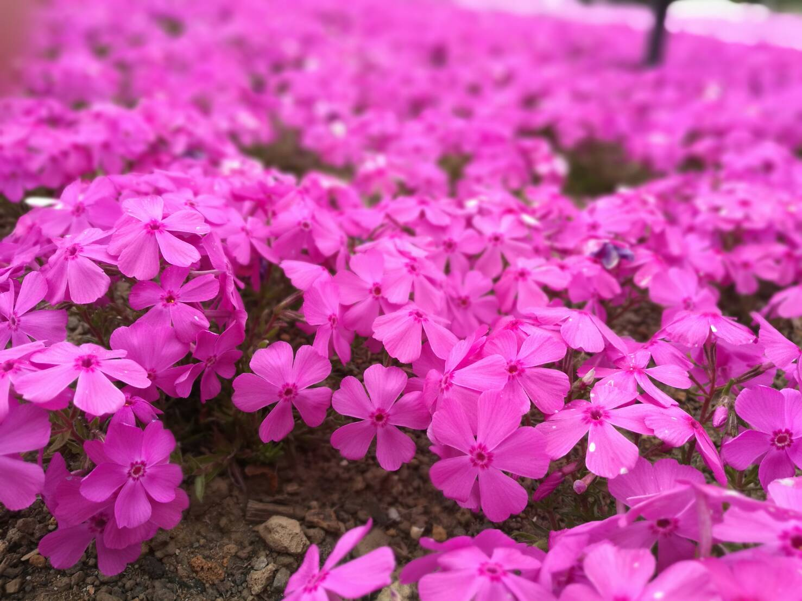
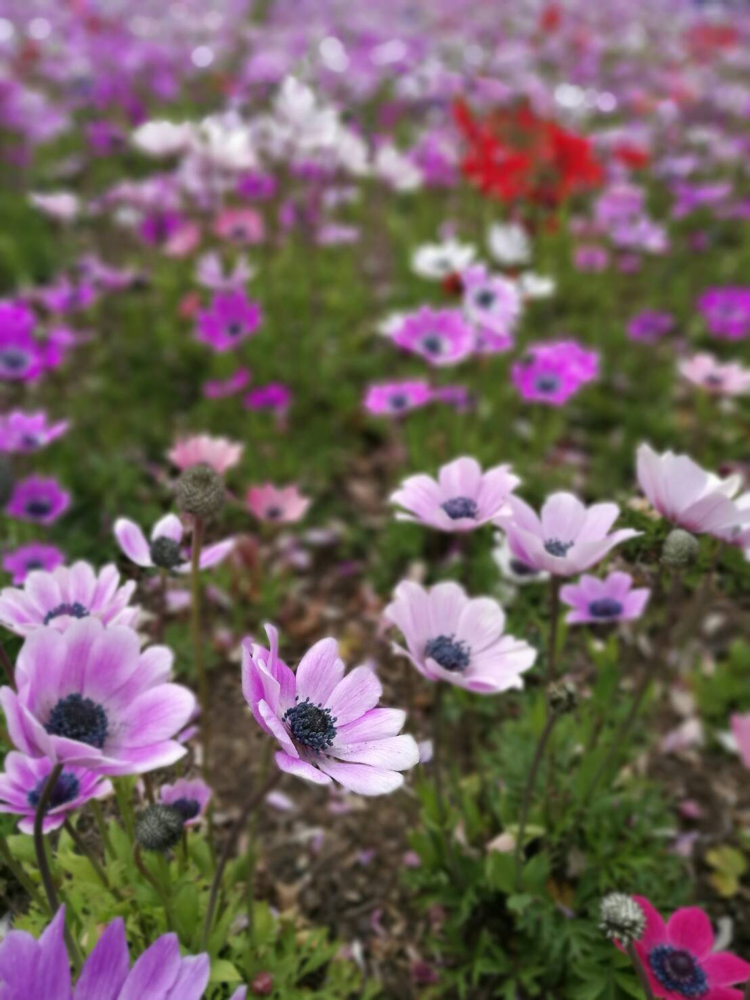
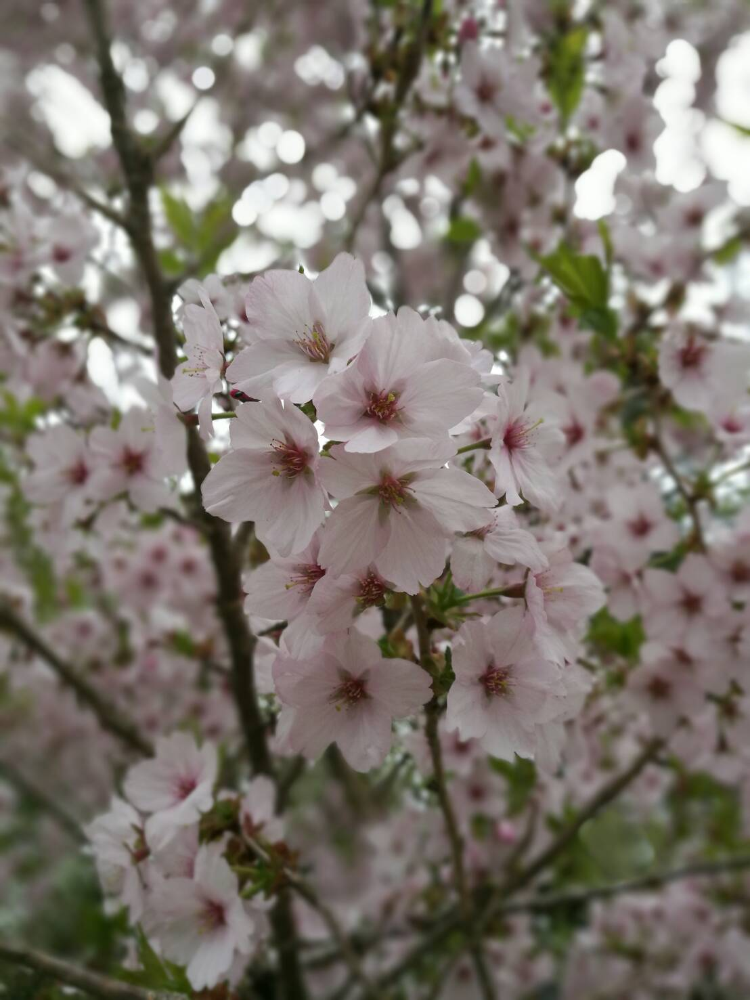
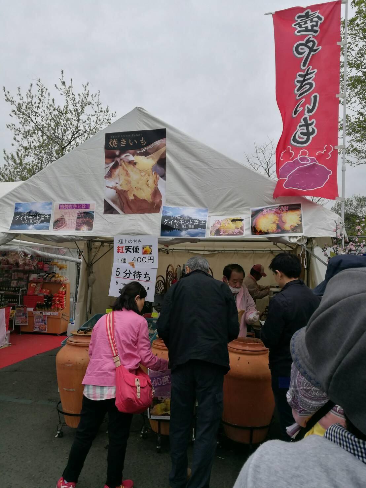
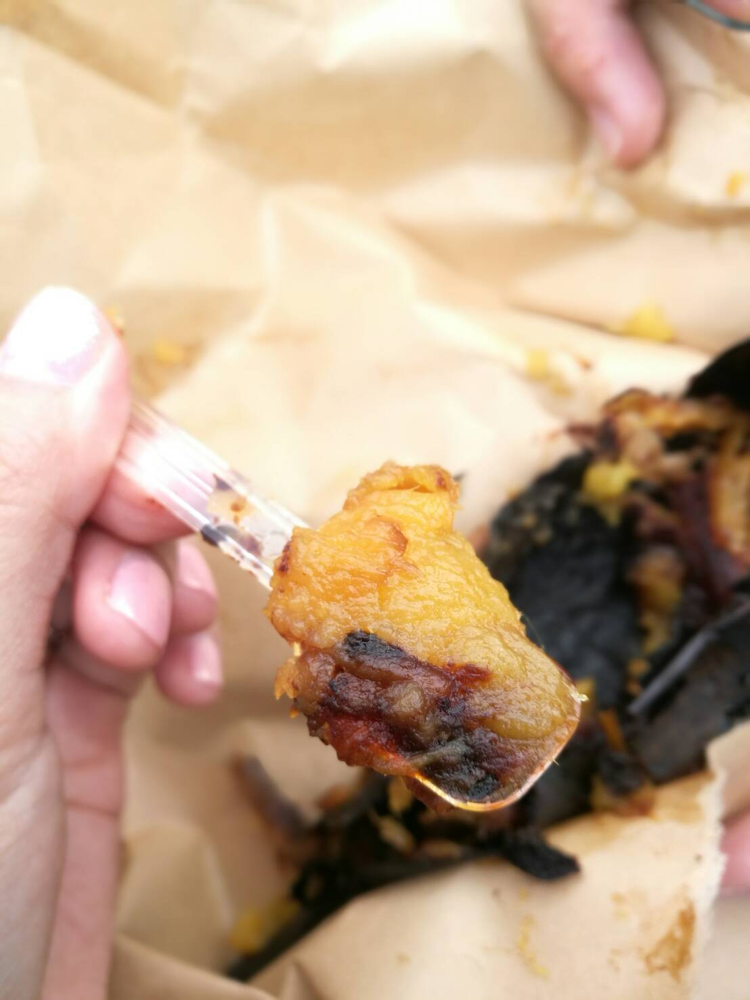
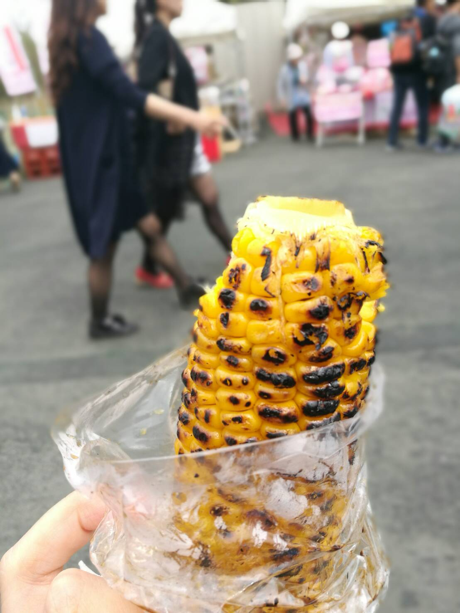

This year on our trip to Japan, we managed to catch the Shibazakura Festival. It’s really an eye opening experience and very enjoyable! Getting there and back! Take the Shibazakura bus from the Kawaguchiko bus station. The tickets are sold directly at the boarding lane for the bus. It’s about 30mins by bus and the bus takes you right to the festival site! 🙂 There’s an admission fee which is inclusive of the bus ride back and forth. **Quick Tip** The bus moves on once it is full so if you want to catch the bus at a designated time do go earlier to check out the queue. We were there on a weekday but the queues were really long and we ended up having to board the next available bus instead of the one which we originally set out to take. The queue builds really quickly so it would be good to be there early!
Shibazakura and Mout Fuji!
Fields and fields of pink flowers!!
Close up of the pink flowers
There were also other flowers around!
 Still some little Sakura left! There’s also food and drinks there once you get hungry! The food there was really good and I possibly tasted the best sweet potato in my life while I was there. It was sooo goood. Here’s a picture of it, the picture doesn’t do it justice but was really delicious. This sweet potato is called the “Red Angel” and they are steamed in the large vats before they are served. They are sweet and has a beautiful, slightly charred scent.
The line for the sweet potato
#mindblowingsweetpotato
Freshly grilled corn
We also ate a skewer of Mazuzaka Beef. I was however, too excited to eat it so we do not have a picture. haha! The place was beautiful. Do check it out if you happen to be in the area. Here’s more information if you are looking to head to the festival: http://www.shibazakura.jp/eng/